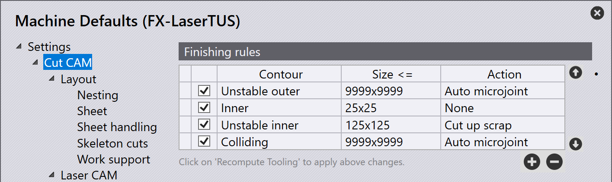
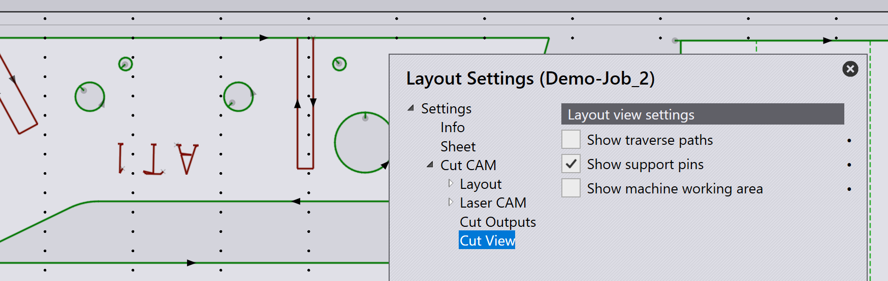
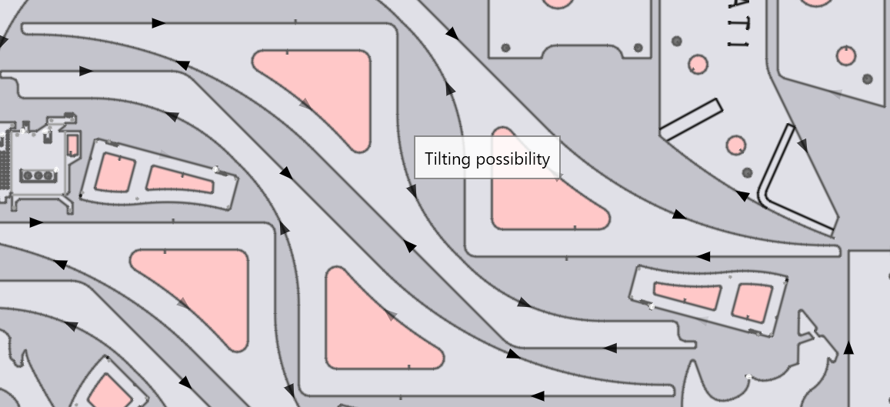
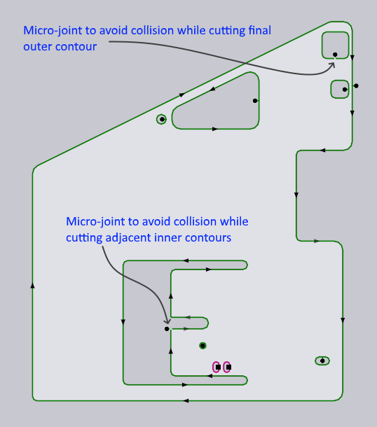
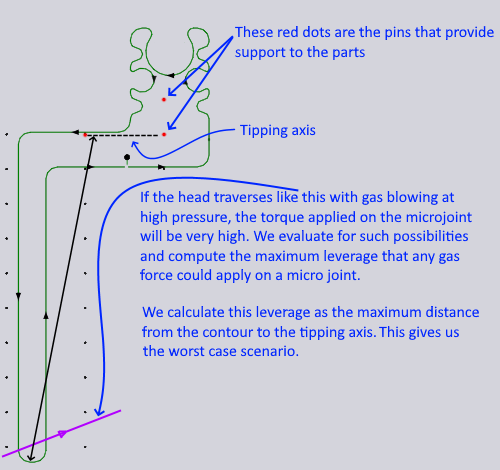
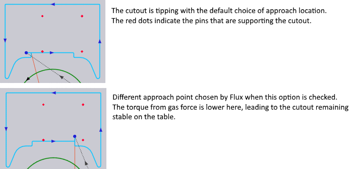
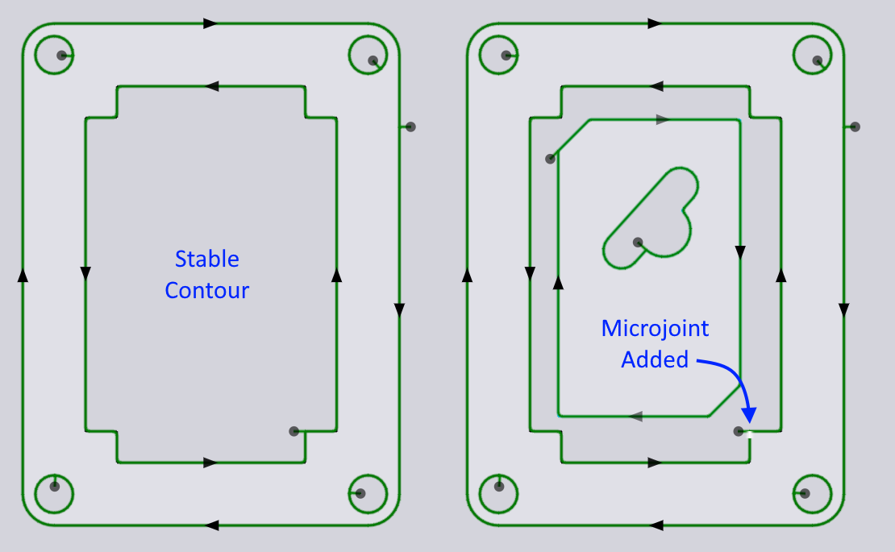

Pravidla dokončení
TecZone Laser používá systém Finishing rules k určení, co dělat po dokončení řezání otvoru nebo součásti. Jakmile se tyto otvory a části oddělí od plechu (laserovým řezáním), může dojít k různým situacím:
-
Velmi malé výstřižky mohou propadnout mezerami mezi čepy (nebo úložnými rošty) podpírajícími plech (to je v pořádku a nezpůsobuje žádné problémy).
-
Velmi malé díly mohou podobně propadnout skrz čepy, což není žádoucí (protože tyto díly je třeba znovu získat). V ideálním případě jsou s plechem spojeny drátem, aby je bylo možné vyjmout společně s plechem.
-
Velké výstřižky a díly budou podepřeny dostatečným počtem čepů, aby zůstaly stabilní na stole stroje (to je v pořádku).
-
Výstřižky nebo díly střední velikosti mohou způsobovat problémy, protože nemusí být dostatečně podepřeny a mohou se naklonit, a vyvýšená část dílu může narážet do laserové hlavy, když se pohybuje nad hlavou.
-
I když se zdá, že je díl dostatečně podepřen čepy, může řezání tryskou v jeho blízkosti způsobit problémy kvůli tlaku vyvíjenému proudem plynu z trysky. Tento dynamický tlak může způsobit naklonění dílu a následnou kolizi.
K vyřešení těchto problémů se používají pravidla dokončení. Pokud je díl nebo výstřižek shledán nestabilním nebo představuje riziko kolize, existuje několik možností:
-
Lze přidat jeden nebo více mikrospojů, aby se díl nebo výstřižek udržel připevněný k plechu. Tyto budou později odlomeny jako krok dodatečné úpravy poté, co bude plech odstraněn z laserového stroje.
-
Výstřižky lze nakrájet na menší kousky, které propadnou mezerami mezi úložnými rošty.
Nastavení pravidel dokončení
Finishing rules jsou nastavené na stránce CAM řezání dialogového okna Settings.

Každé pravidlo určuje druh kontury, velikost a akci, která by měla být provedena, když dojde ke shodě. Pořadí těchto pravidel je důležité. Jakmile TecZone Laser dokončí zpracování každé kontury, projde tato pravidla a aplikuje první, které odpovídá. Obecně to znamená, že musíte nejprve napsat konkrétnější pravidla nebo nejprve použít menší velikosti. (tlačítka Up a Down vedle pravidel lze použít k jejich zamíchání nahoru a dolů).
Druhy kontur
-
All odpovídá všem konturám (otvorům nebo vnějším konturám).
-
Stable odpovídá všem konturám, které zůstanou stabilní na úložných roštech nebo čepech.
-
Stable inner je soubor vnitřních kontur, které jsou stabilní.
-
Stable outer je soubor vnějších kontur, které jsou stabilní.
-
-
Unstable odpovídá všem konturám, které se buď nakloní, nebo propadnou mezi čepy.
-
Unstable inner je soubor vnitřních kontur, které jsou nestabilní.
-
Unstable outer je soubor vnějších kontur, které jsou nestabilní.
-
-
Colliding odpovídá všem konturám, které jsou nestabilní a zároveň se nacházejí v blízkosti jiné kontury na daném dílu. Když je nestabilní vnitřní kontura blízko jiné nestabilní vnitřní kontury, obě jsou označeny jako potenciálně kolidující, protože není pevně dané, která z nich bude první vyříznuta (a tato sekvence se může změnit při umístění dílu do rozvržení). Když je nestabilní vnitřní kontura blízko nestabilní vnější kontury, označí se jako kolidující pouze vnitřní kontura (protože ta bude vždy vyříznuta jako první).
-
Colliding inner je soubor vnitřních kontur, které jsou klasifikovány jako kolidující.
-
Colliding outer je soubor vnějších kontur, které jsou klasifikovány jako kolidující.
-
Analýza k určení, zda je kontura Stable nebo Colliding je složitá.
Níže uvedená část Výpočet stability vysvětluje některé z těchto složitostí.
Akce
Druh kontury a Size slouží k nastavení kritérií, podle kterých se kontroluje každá kontura při jejím nastrojení. Když je nalezena shoda (pravidla jsou vyhodnocována v pořadí), je na dané kontuře provedena odpovídající Action.
-
None: Není provedena žádná zvláštní akce.
-
Auto microjoint: Aplikuje jeden nebo více mikrospojů na konturu. Počet potřebných mikrospojů se určuje automaticky (viz část Výpočet stability níže).
-
Cut up scrap: Rozřeže výstřižky z otvorů na menší kousky, které propadnou skrz úložné rošty. Velikost šrotu se nastavuje na stránce Cut CAM dialogového okna Settings.
-
One microjoint, Two microjoints a Three microjoints:Vytvořte přesný počet mikrospojů na kontuře.
Výpočet stability
Výpočty stability naklonění závisí na poloze kontur vzhledem k opěrným čepům stroje. Pro pochopení výsledků této analýzy je užitečné zapnout zobrazení opěrných čepů ze stránky Cut View dialogového okna nastavení:

Software automaticky rozpozná, zda se díl může na rozvržení naklonit. Možné nakloněné/nestabilní díly budou na rozvržení označeny červenými konturami, což umožní úpravu pravidel dokončení před zpracováním úlohy.

Přidání mikrospojů
Zde je příklad, kde TecZone Laser přidal mikrospoje k některým otvorům, které jsou velmi blízko vnějším konturám (nebo jiným otvorům). Když tryska při řezání těchto dalších otvorů projde tak blízko, je možné, že se tento výstřižek nakloní nahoru v důsledku tlaku plynu a způsobí kolizi. Takže se přidá mikrospoj.

Všimněte si, že pro ještě menší otvor poblíž nebyl nutný žádné mikrospoj, protože je dostatečně malý, aby bezpečně prošel mezerami v čepech.
Točivý moment na mikrospojích
Zde je extrémnější příklad, kdy jeden mikrospoj nemusí stačit.

Jak je vysvětleno na obrázku, když se hlava pohybuje nad dlouhým výčnělkem v blízkosti spodní části kontury, výsledný točivý moment na mikrospoj (kvůli dlouhému ramenu páky) může způsobit jeho odlomení a automaticky se přidají další mikrospoje, aby se tomu zabránilo, pokud byla akce ui:EAfterCut.WireAuto[Auto microjoint] specifikována v pravidle dokončení, které se vztahuje na tuto konturu.
Posun bodů nájezdu

Někdy může volba jiného bodu nájezdu změnit nestabilní konturu na stabilní konturu, jak je znázorněno výše. TecZone Laser detekuje takové situace a automaticky upraví bod nájezdu.
Optimální rozmístění díl v dílu
Velká vnitřní kontura otvoru může být podepřena dostatečným počtem čepů a může být posouzena Stable. Na tento otvor nemusí být aplikována žádná zvláštní dokončovací akce, protože výstřižek by spočíval stabilně na čepech (jak je znázorněno na obrázku vlevo dole):

V rozvržení může být do tohoto otvoru vložen menší díl, aby se zlepšilo využití plechu, a v tom okamžiku nemusí být vnitřní kontura podepřena dostatečným počtem čepů, aby byla považována za stabilní. TecZone Laser přidá mikrospoj pro stabilizaci kontury, jak je znázorněno na obrázku vpravo nahoře.
Pokud je menší díl umístěný v tomto otvoru následně odstraněn, mikrospoj také zmizí.